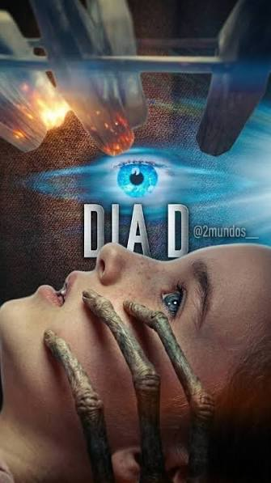

Sobre o Filme e a Teoria
A Origem da Tese no Filme
O filme Dia D utiliza o cinema de ação para introduzir um dos maiores questionamentos da arqueologia alternativa: a hipótese dos antigos astronautas. A obra aborda a ideia de que eventos cruciais da história humana foram moldados por inteligências fora da Terra.

Conexão com Erich von Däniken
Em sua célebre obra "Eram os Deuses Astronautas?", o autor suíço defende que monumentos como as Pirâmides do Egito e as Linhas de Nazca contêm conhecimentos tecnológicos incompatíveis com a época de sua construção.
Homenagem ao Autor Erich von Däniken
Esta obra presta uma sincera homenagem ao escritor e pesquisador Erich von Däniken, um verdadeiro pioneiro que desafiou o pensamento convencional ao propor novos caminhos para compreender o nosso passado. Sua coragem em questionar a história oficial inspirou gerações de leitores e cineastas ao redor do mundo.
Apesar de seu falecimento e da partida do autor, o seu vasto legado de pesquisas, livros e teorias continuará eternizado na cultura pop, na literatura e no cinema. Erich nos ensinou a olhar para o céu noturno com curiosidade e nunca deixar de questionar se realmente estamos sozinhos no universo.